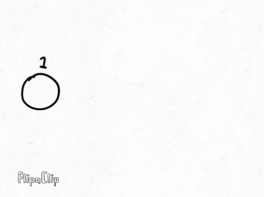
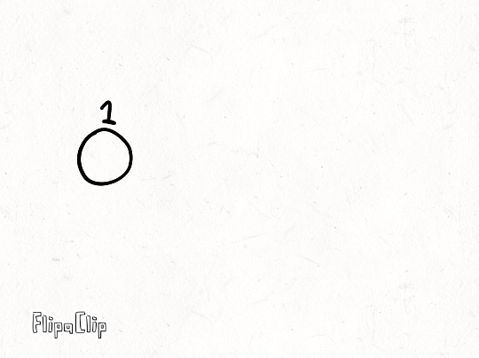
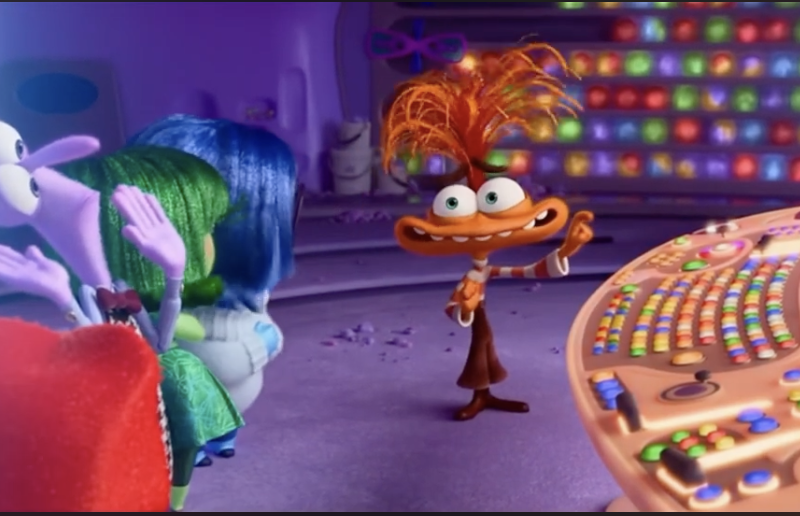
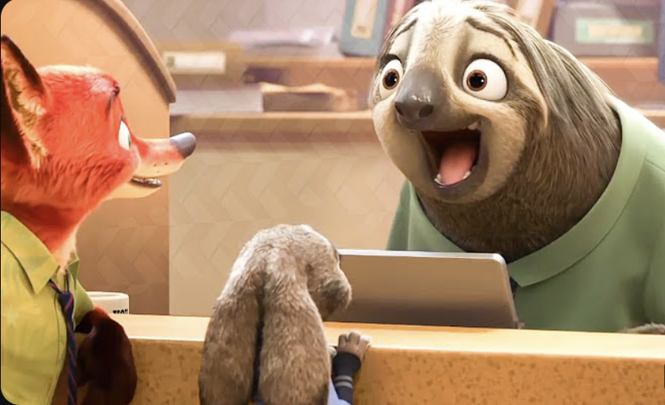

Timing
Timing is all about the number of frames in a period. The more frames, the slower the movement, and the less frames, the faster it appears. The level of speed can make a character communicate different things, so it’s important to know how fast movement should feel to convey the desired message.

In this transition, the 12 frames are placed under one second, an each frame is very close to each other. Since there's more frames, the animation looks like it's going at a slow pace. Making an animation go at a slow pace can convey different types of meanings for different purposes.

In this transition, there are only four frames going on one second. The few frames the sequence has gives the perception that it is going fast. That's why the less frames you add, the faster the sequence will be. Faster animation can work if you are looking for sequences with action or frantic movement.

Click image to see video. In this scene from Inside Out 2, we meet Anxiety, an emotion who is very active and stressed. We can see how she moves at a fast pace as she runs to greet everyone and as she does a lot of things under a few seconds. The timing is set right to let the audience know the personality of the character.

Click image to see video. In this scene from Zootopia, we get to meet the sloths of the movie. Everything they do is at a really slow pace, from their actions, the way they talk, and their facial expressions. The timing of their actions sets the mood of the characters, the same way it achieves a nice comedic effect.